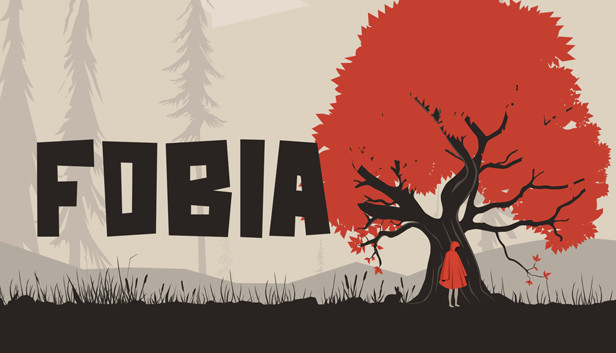

Levar um susto ao ver uma aranha ou uma cobra, sentir frio na barriga ao olhar pela janela do vigésimo andar de um prédio ou ficar desconfortável falando diante de uma plateia são reações comuns quando nos deparamos com situações inesperadas ou pouco habituais.
Porém, quando o medo e a ansiedade tornam-se excessivos e persistentes, pode ser um sinal de desenvolvimento de fobias — um tipo de transtorno de ansiedade que afeta milhões de pessoas ao redor do mundo.
De acordo com dados da Organização Mundial da Saúde (OMS), o Brasil está no topo da lista de países com o maior percentual de pessoas com transtornos de ansiedade: 9,3% dos brasileiros sofrem desse problema de saúde mental, incluindo as fobias gerais.
Quando não tratada, a fobia pode gerar sofrimento e afetar diretamente a rotina e as relações sociais do indivíduo, trazendo limitações no trabalho, na escola ou nas atividades do dia a dia. Isso acontece porque quem sofre desse transtorno costuma evitar situações em que se expõe à causa do medo.
O que é Fobia?
A fobia é um tipo de transtorno de ansiedade caracterizado pelo medo irracional de uma situação, atividade, lugar, objeto ou animal, mesmo que isso não represente qualquer perigo. Ou seja, a ansiedade que uma pessoa fóbica sente é desproporcional à circunstância em si.
Existem tanto fobias específicas, como medo de animais, de altura, de ferimentos ou de sangue, quanto complexas, como medo de interações sociais. Geralmente, os transtornos simples se manifestam quando uma pessoa tem um senso de perigo exagerado ou irrealista sobre algo e evita os gatilhos específicos.
O desenvolvimento de fobias pode estar ligado à interação entre fatores genéticos e ambientais, a condicionamentos, a eventos negativos relacionados a uma situação ou objeto, a mudanças no funcionamento do cérebro ou a experiências traumáticas vividas na infância. Por isso, crianças e jovens são suscetíveis a apresentar esse tipo de transtorno.
Segundo uma pesquisa realizada por Fernando Asbahr, professor de psiquiatria da Faculdade de Medicina da Universidade de São Paulo (FMUSP), aproximadamente 10% das crianças e adolescentes preencherão critérios diagnósticos para algum tipo de transtorno de ansiedade. Nessa população, a prevalência de fobias específicas é em torno de 2,4 a 3,3%, e de fobia social, de 1%.
Qual é a diferença entre medo e fobia?
O medo é considerado uma emoção básica, ou primária, de adaptação do homem frente a situações de ameaça ou perigo enfrentadas ao longo de sua história evolutiva. Esse estado emocional é universal, ou seja, é compartilhado entre indivíduos de todas as culturas.
Essa resposta imediata a eventos ambientais ou pensamentos internos desencadeia mudanças de raciocínio e comportamento. Isso acontece porque a emoção é formada por três componentes: resposta fisiológica, como taquicardia e sudorese; resposta comportamental, como olhos arregalados; e sensação, em que a pessoa interpreta essas respostas corporais como “estou com medo”.
Já a ansiedade é uma mistura de emoções, em que o medo é predominante. Esse sentimento ajuda as pessoas a anteciparem eventos futuros e a buscarem novas formas de enfrentar os desafios, sendo também parte normal e benéfica na vida diária. Os níveis de medo e ansiedade variam de pessoa para pessoa, podendo aumentar ou diminuir de acordo com a circunstância.
Em situações de ameaça ou perigo, o medo e a ansiedade se relacionam, gerando um estado de apreensão e tensão e comportamentos de proteção, defesa, fuga e esquiva. Porém, quando a ansiedade ou o medo é angustiante, persistente ou incontrolável na ausência de perigo real, é um indício de que a pessoa está sofrendo de fobia.
Portanto, a grande diferença entre o medo e a fobia é a intensidade dos sentimentos e das emoções e as consequências negativas que esse distúrbio traz para a vida da pessoa.